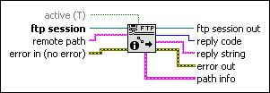

FTP Get Path Info VI
Owning Palette: Intermediate FTP VIs
Requires: Base Development System
Returns information about a path on the FTP server.
This VI uses the LIST command to interpret the information as a UNIX ls command output. If the VI fails, only the name in the path info cluster is correct.
(NI Linux Real-Time) The FTP server is disabled by default, and you cannot use it in safe mode. National Instruments recommends using WebDAV as the file transfer mechanism for improved security.

 Add to the block diagram Add to the block diagram |
 Find on the palette Find on the palette |